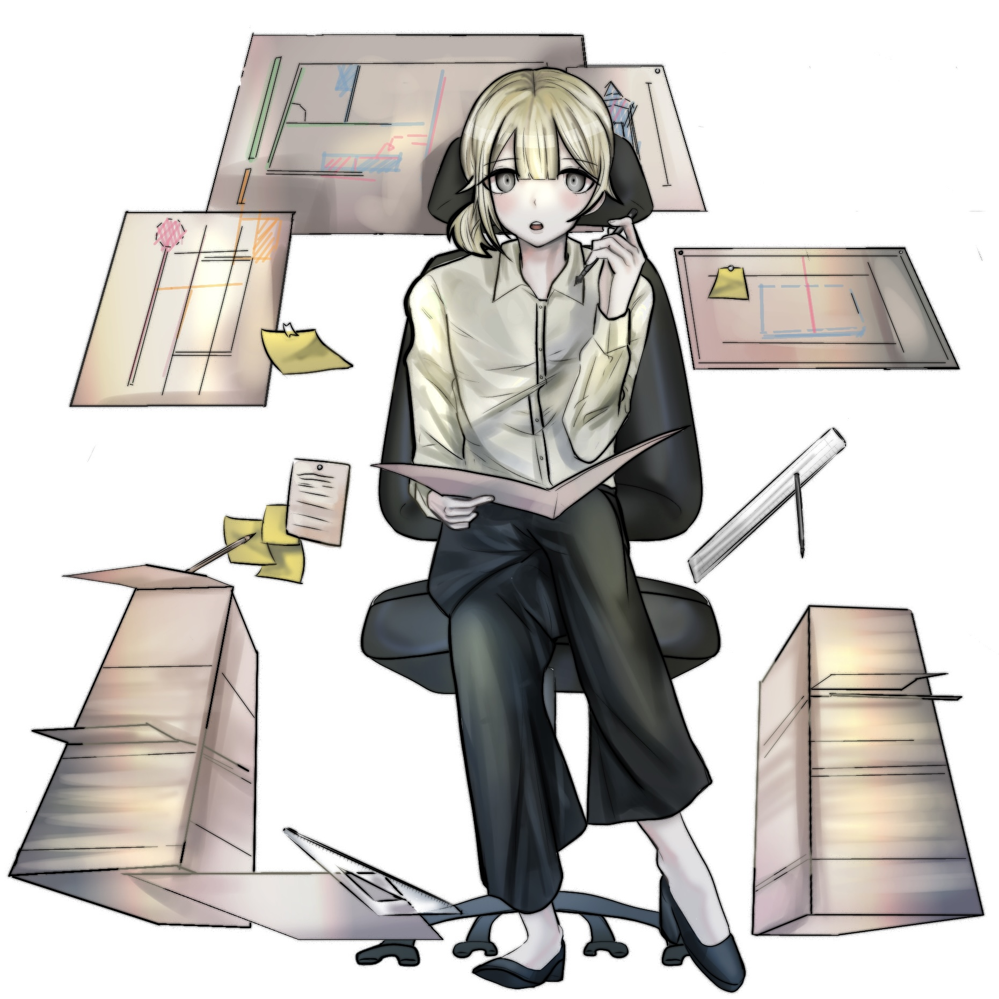

요시미 하야토
분류:단간론파 시리즈/드림주
<초고교급 설계사>
요시미 하야토
Yoshimi Hayato

일본어 표기명
吉見 蓮飛 (よしみ はやと)
신체 사이즈
신장-168cm
체중-49kg
가슴둘레-83cm
체중-49kg
가슴둘레-83cm
생일
10월 10일 (천칭자리)
혈액형
A형
편입 전 고등학교
프리크 학원
좋아하는 것
명함
싫어하는 것
나태한 사람
가족
오빠 요시미 유우히
1인칭
와타시(私)
담당 성우
하네자키 아츠미
개요
PSP용 추리 어드벤처 게임 《단간론파 -희망의 학원과 절망의 고교생-》의 드림주.
캐릭터 정보
캐릭터 특성
작중 행적
자세한 내용은 요시미 하야토/작중 행적 문서를 참고하십시오.